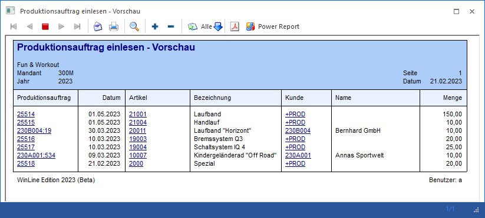

Mit dem Programmbereich "Produktionsauftrag einlesen", welcher über den Menüpunkt
1 WinLine PPS
1 Produktion
1 Produktionsauftrag einlesen
aufgerufen wird, können Produktionsaufträge aus WinLine FAKT in die Produktion übernommen werden.
Hinweis
Nähere Informationen zu dem Bereitstellen von Aufträgen in der WinLine FAKT können dem Kapitel Produktionsaufträge über WinLine FAKT entnommen werden.

Das Einlesen untergliedert sich hierbei in die folgenden Bereiche, welche in den nachfolgenden Kapiteln beschrieben werden:
ü Bereich "Selektion /
Gruppierung"
In diesem Bereich kann eine Selektion und Gruppierung auf
die einzulesenden Produktionsaufträge erfolgen.
ü Bereich "Übernahme"
In diesem
Bereich werden die einzulesenden Produktionsaufträge angezeigt und können vor
der Übernahme in die Produktion weiter eingegrenzt bzw. bearbeitet werden.
Buttons
Ø Ok
Befindet man sich Bereich "Selektion / Gruppierung", so wird bei Anwahl des Buttons "Ok" bzw. der Taste F5 innerhalb der offenen und noch nicht übernommenen Produktionsaufträgen nach Aufträgen gemäß der hinterlegten Selektion gesucht und diese in der Übernahme angezeigt.
Im Bereich "Übernahme" wird wiederum die Übernahme (das sogenannte "Einlasten") der Aufträge gestartet, wobei nur die ausgewählten Produktionsaufträge berücksichtigt werden (siehe Spalte "Importieren").
Je nachdem, welche Einstellungen in den Produktionsartikeln, den Stücklisten und den PPS-Parametern getroffen wurden, verzweigt die WinLine automatisch in weitere Programmbereiche.
ü Zuordnung
Dieser Programmbereich
wird pro Produktionsauftrag automatisch geöffnet, wenn der Produktionsartikel
oder eine der benötigten Komponenten mit Ident- bzw. Chargennummer geführt wird
oder eine sonstige Ausprägung (z.B. Farbausprägung) beinhaltet. Zusätzlich wird
das Fenster angezeigt, wenn ein Artikel mit Lagerortstruktur vorhanden ist.
Achtung
Grundvoraussetzung für eine
Darstellung der Ausprägungs- und / oder Lagerortartikel ist eine korrekte
Einstellung der Ausprägungsoptionen. Dort muss für den jeweiligen Typ zumindest
"2 - kann erfolgen" hinterlegt worden sein (nähere Informationen entnehmen Sie
bitte dem Kapitel "Aufteilungsoptionen").
Des Weiteren darf die Option
"Zuordnungsfenster" aus den PPS-Parametern (Bereich "Produktionsauftragsanlage")
nicht auf "1 - nie öffnen (Fix)" gestellt werden.
ü Verfügbarkeitsliste
Dieser
Programmbereich wird automatisch geöffnet, wenn in den PPS-Parametern (Bereich
"Produktionsauftragsanlage") die Option "Artikelverfügbarkeit prüfen" aktiviert
wurde.
ü Produktionsauftrag - Tätigkeiten
einplanen
Dieser Programmbereich wird automatisch geöffnet, wenn in der
Stückliste des zu produzierenden Artikels Tätigkeiten hinterlegt wurden.
Ø Ende
Durch Anwahl des Buttons "Ende" bzw. der Taste ESC wird der Programmbereich verlassen und keine Produktionsaufträge eingelesen.
Ø Vorschau (nur Bereich "Übernahme")
Bei Anwahl dieses Buttons wird eine Vorschau aller noch nicht übernommenen Produktionsaufträge ausgegeben.
